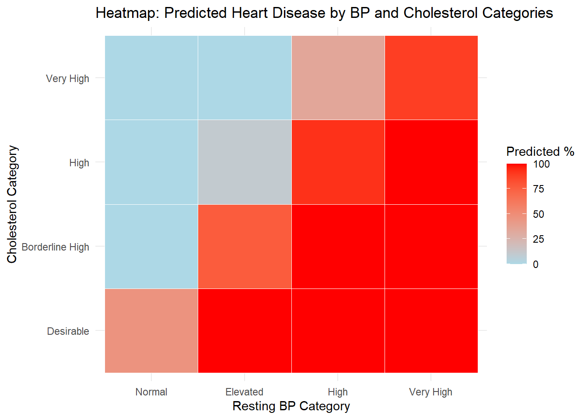

Code
library("readxl")Welcome to the analysis page of our project. This page explores our research questions in detail, presenting insights, visualizations, and findings derived from the data.
Warning: package 'ggplot2' was built under R version 4.4.2Warning: package 'rpart.plot' was built under R version 4.4.2Loading required package: latticeWarning: package 'e1071' was built under R version 4.4.2# A tibble: 6 × 12
age sex chest_pain resting_bp cholestrol fasting_bloodsugar resting_ecg
<dbl> <dbl> <dbl> <dbl> <dbl> <dbl> <dbl>
1 40 1 2 140 289 0 0
2 49 0 3 160 180 0 0
3 37 1 2 130 283 0 1
4 48 0 4 138 214 0 0
5 54 1 3 150 195 0 0
6 39 1 3 120 339 0 0
# ℹ 5 more variables: max_heartrate <dbl>, exercise_angina <dbl>,
# oldpeak <dbl>, ST_slope <dbl>, target <dbl>Objective: It is for this reason that the effectiveness of three physiological measures: age, cholesterol and maximum heart rate for the prediction of heart disease will be compared in this analysis. Using predictive modeling we are able to foresee different prospects and threats that often lead to heart diseases.
Methods Used: From age, cholesterol levels, and maximum heart rate. Model performance was evaluated on a training (80%) and testing (20%) datasets. We assessed the model’s feature importance and visualize the predicted probabities to gain an understanding of what the model is predicting.
Key Results: The Random Forest model got 83.33% of accuracy on the testing data, achieving good classifying heart disease on a data set. In a box plot, very different distributions were observed for predicted probabilities of heart disease by heart disease status.
Visualization:
Warning: package 'randomForest' was built under R version 4.4.2randomForest 4.7-1.2Type rfNews() to see new features/changes/bug fixes.
Attaching package: 'randomForest'The following object is masked from 'package:ggplot2':
margin
Attaching package: 'plotly'The following object is masked from 'package:ggplot2':
last_plotThe following object is masked from 'package:stats':
filterThe following object is masked from 'package:graphics':
layout#'target' variable is a factor (for classification)
data$target <- factor(data$target, levels = c(0, 1))
# Split the data into training and testing sets
set.seed(123) # For reproducibility
train_index <- createDataPartition(data$target, p = 0.8, list = FALSE)
train_data <- data[train_index, ]
test_data <- data[-train_index, ]
# training thr rf model
rf_model <- randomForest(target ~ age + cholestrol + max_heartrate, data = train_data, importance = TRUE, ntree = 100)
# evaluating the the model on the testing set
rf_predictions <- predict(rf_model, newdata = test_data)
rf_accuracy <- mean(rf_predictions == test_data$target)
test_data$predicted_prob <- predict(rf_model, newdata = test_data, type = "prob")[, 2] # Probability of class 1 (Heart Disease)
cat("Model Accuracy on Test Data:", round(rf_accuracy * 100, 2), "%\n")Model Accuracy on Test Data: 83.33 %gg <- ggplot(test_data, aes(x = target, y = predicted_prob, fill = target)) +
geom_boxplot(alpha = 0.7, outlier.color = "black", outlier.shape = 16) +
labs(
title = "Predicted Probabilities by Heart Disease Status",
x = "Heart Disease Presence",
y = "Predicted Probability",
fill = "Heart Disease Presence"
) +
scale_fill_manual(values = c("lightblue", "lightgreen")) +
theme_minimal(base_size = 14) +
theme(
plot.title = element_text(hjust = 0.5, face = "bold"),
axis.title = element_text(face = "bold"),
legend.position = "none"
)
interactive_plot <- ggplotly(gg, tooltip = c("x", "y", "fill"))
interactive_plotObjective: It was done to be able to determine if there was a significant relationship between having heart disease and chest pain type. By determining this relationship, healthcare professionals can then classify patients to their risk groups according to chest pain type.
Methods Used: Using Chi squared test for independence, we analyzed whether the ability of a given chest pain to diagnose the presence of heart disease. Categorical variables were leveled appropriately. bar plot was used to visualize how the association between chest pain types and heart disease presence and absence.
Key Results: Chest pain type and heart disease presence is found to have a significant association with a p value < 0.05.
Visualization:
[1] Missing Values in 'chest_pain': 0 [1] Missing Values in 'target': 0 data$chest_pain <- factor(data$chest_pain, levels = c(1, 2, 3, 4)) # adjusting to match the chest pain categories
data$target <- factor(data$target, levels = c(0, 1)) # adjusting to match the target variable categories
# creating a contingency table of chest pain type and heart disease presence of target variable
contingency_table <- table(data$chest_pain, data$target)
chisq_test <- chisq.test(contingency_table)
#output
cat("\nPearson's Chi-squared test\n")
Pearson's Chi-squared testdata: table(data$chest_pain, data$target)X-squared = 331.02, df = 3, p-value = <2e-16gg <- ggplot(data, aes(x = as.factor(chest_pain), fill = as.factor(target))) +
geom_bar(position = "dodge") +
scale_fill_manual(
values = c("0" = "lightblue", "1" = "lightgreen"),
labels = c("No Heart Disease", "Heart Disease")
) +
labs(
x = "Chest Pain Type",
fill = "Heart Disease Presence",
y = "Count",
title = "Association Between Chest Pain Type and Heart Disease"
) +
theme_minimal()
interactive_plot <- ggplotly(gg, tooltip = c("x", "y", "fill"))
interactive_plotObjective: In this analysis the combined effect of resting blood pressure (BP) and cholesterol levels on the likelihood of heart disease is analyzed. Understanding this relationship, health care providers can better know the interactions of the physiological factors that predict heart disease risk.
Methods Used: Resting blood pressure and cholesterol levels were used as predictors in a fitted logistic regression model to see whether heart disease was present. The model produced p values, confidence intervals and predicted probabilities. Blood pressure and cholesterol that were in clinically relevant ranges were assessed for their joint effect. Finally, we visualized the predicted likelihood of heart disease across combinations of BP and cholesterol categories with a heatmap.
Key Results: An analysis with logistic regression model confirmed significant combined effect of resting BP and cholesterol values on heart disease likelihood (p <. 05 for both predictors). A heatmap showed those with higher BP and cholesterol levels had higher predicted likelihood of heart disease.
Visualization:
Warning: package 'dplyr' was built under R version 4.4.2
Attaching package: 'dplyr'The following object is masked from 'package:randomForest':
combineThe following objects are masked from 'package:stats':
filter, lagThe following objects are masked from 'package:base':
intersect, setdiff, setequal, union
Call:
glm(formula = target ~ resting_bp + cholestrol, family = binomial(link = "logit"),
data = data)
Coefficients:
Estimate Std. Error z value Pr(>|z|)
(Intercept) -1.1255089 0.4532112 -2.483 0.013 *
resting_bp 0.0167095 0.0034208 4.885 1.04e-06 ***
cholestrol -0.0045934 0.0006473 -7.096 1.28e-12 ***
---
Signif. codes: 0 '***' 0.001 '**' 0.01 '*' 0.05 '.' 0.1 ' ' 1
(Dispersion parameter for binomial family taken to be 1)
Null deviance: 1630.0 on 1177 degrees of freedom
Residual deviance: 1557.1 on 1175 degrees of freedom
AIC: 1563.1
Number of Fisher Scoring iterations: 4Waiting for profiling to be done... 2.5 % 97.5 %
(Intercept) -2.021360096 -0.24292866
resting_bp 0.010078235 0.02350095
cholestrol -0.005885464 -0.00334525data <- data %>%
mutate(predicted_prob = predict(logistic_model, newdata = data, type = "response"),
predicted_class = ifelse(predicted_prob > 0.5, 1, 0))
data <- data %>%
mutate(bp_category = cut(resting_bp, breaks = c(0, 90, 120, 140, 160, Inf),
labels = c("Low", "Normal", "Elevated", "High", "Very High")),
chol_category = cut(cholestrol, breaks = c(0, 200, 240, 300, Inf),
labels = c("Desirable", "Borderline High", "High", "Very High")))
data$target <- factor(data$target, levels = c(0, 1))
heatmap_data <- data %>%
filter(!is.na(resting_bp) & !is.na(cholestrol)) %>%
mutate(bp_category = cut(resting_bp, breaks = c(0, 90, 120, 140, 160, Inf),
labels = c("Low", "Normal", "Elevated", "High", "Very High")),
chol_category = cut(cholestrol, breaks = c(0, 200, 240, 300, Inf),
labels = c("Desirable", "Borderline High", "High", "Very High"))) %>%
filter(!is.na(bp_category) & !is.na(chol_category)) %>%
group_by(bp_category, chol_category) %>%
summarise(actual = sum(as.numeric(target) == 1),
predicted = sum(predicted_class == 1),
total = n(),
.groups = "drop") %>%
mutate(predicted_percentage = predicted / total * 100)
ggplot(heatmap_data, aes(x = bp_category, y = chol_category, fill = predicted_percentage)) +
geom_tile(color = "white") +
scale_fill_gradient(low = "lightblue", high = "red", name = "Predicted %") +
labs(title = "Heatmap: Predicted Heart Disease by BP and Cholesterol Categories",
x = "Resting BP Category",
y = "Cholesterol Category") +
theme_minimal()